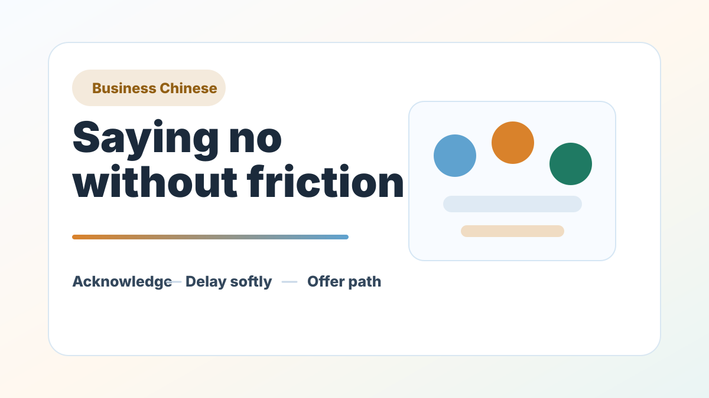
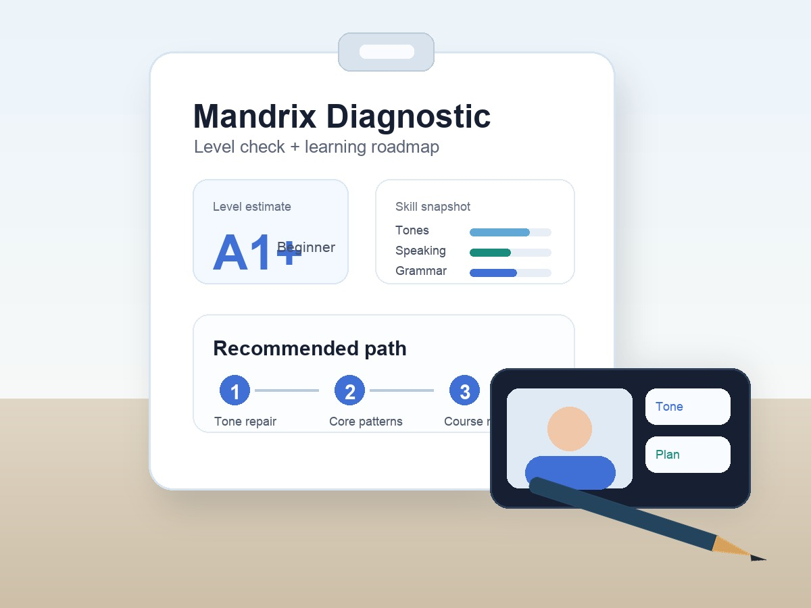

Meetings
Clear updates, agenda language, and follow-up.
Corporate Chinese Training
For companies working with Chinese clients, suppliers, factories, employees, or partners.
Mandrix helps international teams stop relying on scattered phrases and translation apps. We diagnose the team's real communication gaps, decode the Chinese logic behind them, then train employees to produce usable business output.
Surface the business risk, decode the language logic, then build reusable workplace output.


Who this is for
This is not a general language benefit. It is practical communication training for teams that need fewer misunderstandings, faster follow-up, and more confident interaction with Chinese stakeholders.
The Mandrix Method for teams
Corporate training fails when every learner receives the same generic textbook. Mandrix starts with role, workflow, and communication risk, then designs training around what the team actually needs to do in Chinese.
We identify team roles, communication scenarios, current level, business risks, and the messages employees must handle.
Employees learn why Chinese sentences, tone, and indirect communication work the way they do, not just what to repeat.
Each module produces usable assets: email templates, meeting phrases, supplier scripts, follow-up wording, or role-based correction notes.
Team programs
Every corporate program begins with a short needs review, then moves into role-based training and manager-visible outcomes.
For teams that need daily workplace Chinese: introductions, scheduling, updates, requests, polite follow-up, and common internal communication.
For sourcing, operations, e-commerce, and procurement teams working with Chinese factories, markets, and suppliers.
For leaders who need Chinese for meetings, presentations, client dinners, relationship building, and high-stakes cross-cultural moments.
What HR and managers receive
Clear diagnosis of current level, communication risks, and recommended training path.
Training modules mapped to your team's real business workflows.
Message templates, meeting phrases, supplier scripts, and correction records employees can keep using.
Manager-friendly notes on attendance, output, unstable points, and next-step recommendations.
Curriculum is designed and reviewed by Jane Chen, Mandrix founder and lead educator.
Corporate inquiry
Include your team size, industry, current Chinese level, and the situations where Chinese matters most.
Response within 24 business hours · Online training across time zones